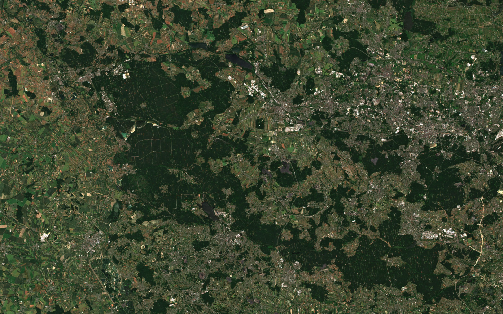

Śląsk · korytarz energetycznyEnergia / zestaw sektorowyDostępne
Roślinność przy liniach energetycznych
Przeglądaj rzeczywiste linie i podpory, historię wegetacji oraz szczegółowe ortofotomapy. Odkryj osobny scenariusz zarastania pasa linii.
- Podkłady i GIS
- Rzeczywiste źródła
- Analiza
- Obliczone NDVI
Zagrożenia: osobna symulacja
SENTINEL-2 · NDVI · GUGiK · OSM